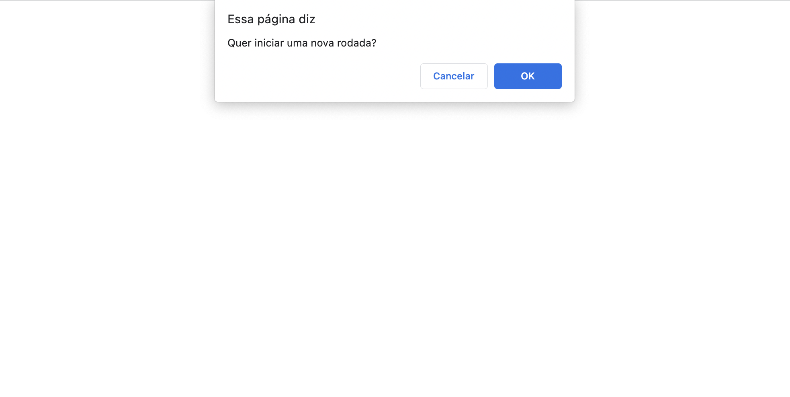
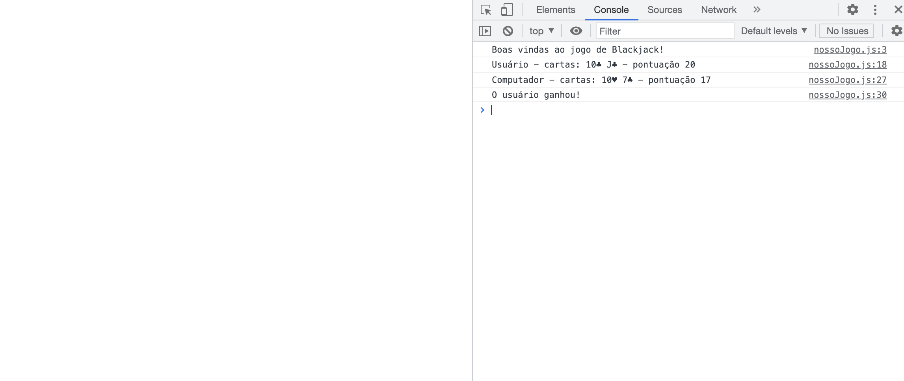

Nesse projeto fiz um código que simulasse algo parecido a um jogo de Blackjack. Nas imagens abaixo é possível entender um pouco mais sobre ele. Logo ao entrar na página o usuário já é questionado se quer começar uma nova rodada e então, no console pode ver as cartas dele e do seu adversário (computador) com o uso de uma função. O programa já calcula a pontuação de cada um e mostra quem venceu a rodada.
 | Linguagem JavaScript |
|---|
| Funções |
| Array |
| Condicionais: if/else |
| Comparadores |